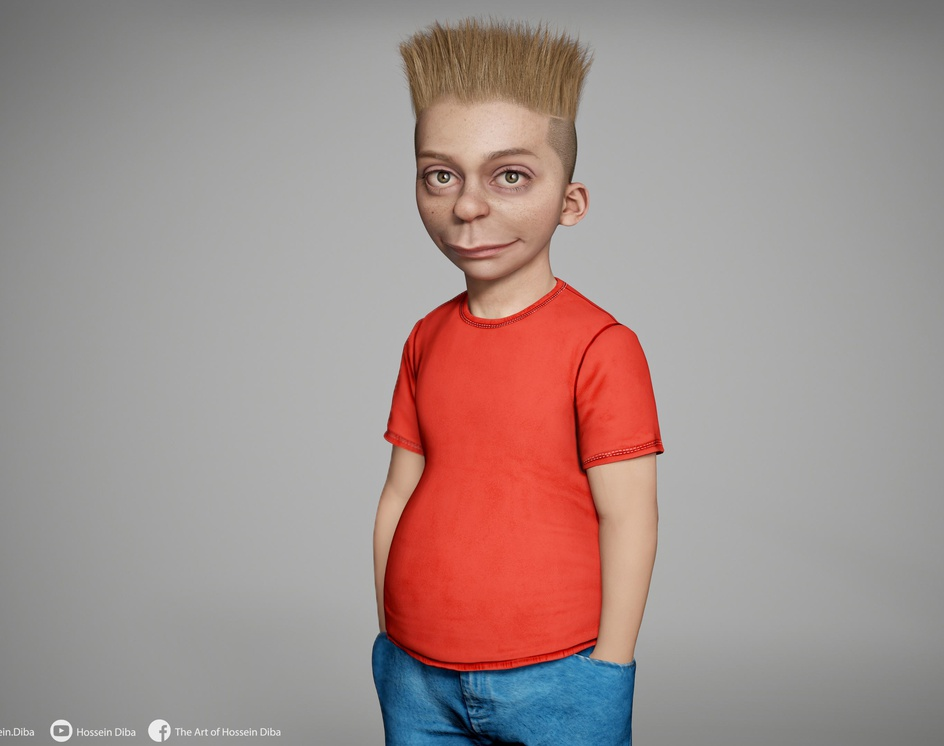
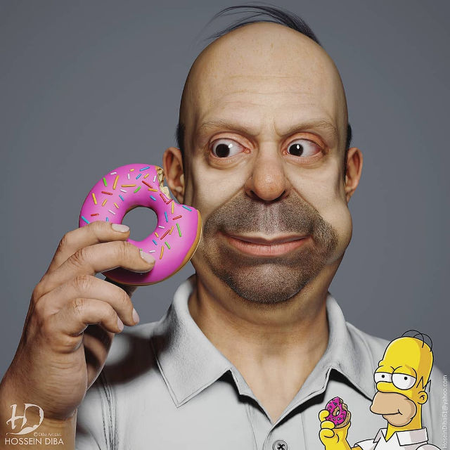
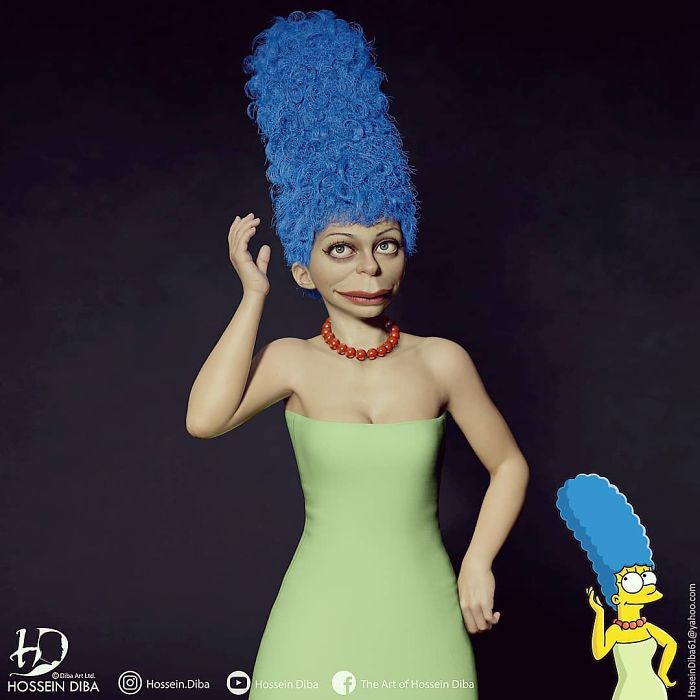
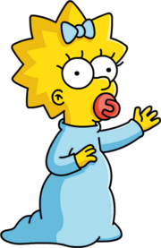

The Simpsons
Bart
Bartholomew JoJo "Bart" Simpson (born April 1) is the Deuteragonist of The Simpsons.
Bart is the mischievous, rebellious, misunderstood, disruptive and "potentially dangerous" oldest child.
He is the only son of Homer and Marge Simpson, and the older brother of Lisa and Maggie. He also has been
nicknamed "Cosmo", after discovering a comet in "Bart's Comet". Bart has also been on the cover on numerous comics,
such as "Critical Hit", "Simpsons Treasure Trove #11", and "Winter Wingding". Bart also has a 100-issue comic series
entitled the Simpson Comics Presents Bart Simpson. Bart is loosely based on Matt Groening and his older brother,
Mark Groening.
Even at a young age, Bart has accomplished many feats. He has won an award for his Angry Dad web series[5],
he has discovered a new comet which was named after him[6], and he also has performed in a successful band
with Milhouse Van Houten, Nelson Muntz, and Ralph Wiggum.[7]
>
Homer
Homer Jay Simpson (born May 12)[21] is the main protagonist and one of the five main characters of The Simpsons series (or show). He is the spouse of Marge Simpson and father of Bart, Lisa and Maggie Simpson. Homer is overweight (said to be ~240 pounds), lazy, and often ignorant to the world around him. Although Homer has many flaws, he has shown to have great caring, love, and even bravery to those he cares about and, sometimes, even others he doesn't. He also serves as the main protagonist of the The Simpsons Movie. He is 39 years old.

Marge
Marge Bouvier was born on March 19, She is the third born child of the Bouvier family. Marge was raised by her parents, Jacqueline and Clancy. She has a pair of sisters, the joyless twins, Patty and Selma, both of whom vocally disapprove of Homer.

Lisa
Lisa Marie Simpson (born May 9 1981)[8] is the elder daughter and middle child of the Simpson family and one of the two tritagonists (along with Marge,) of The Simpsons series.
In Homer and Lisa Exchange Cross Words she is also known as Lisa Bouvier. She was named after a train called Lil' Lisa on her parents' 1st anniversary. She is a charismatic 8-year-old girl, who exceeds the standard achievement of the intelligence level of children her age. Not to everyone's surprise, she is also the moral center of her family.
Meggie
Margaret Evelyn[10] Lenny "Maggie" Simpson[11] (born January 12) is the 1-year old daughter and youngest child of Marge and Homer Simpson, the baby sister to Bart and Lisa Simpson, and one of the five main characters of The Simpsons. She is often seen sucking on her pacifier, and when she walks, she trips over her clothing and falls on her face. Because she rarely ever talks, Maggie is the least seen and heard in the Simpson family. Maggie is the very young, infant age of 1, born in 1989.
